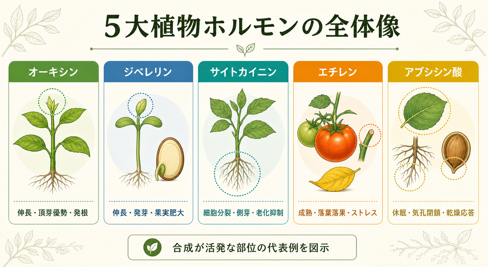
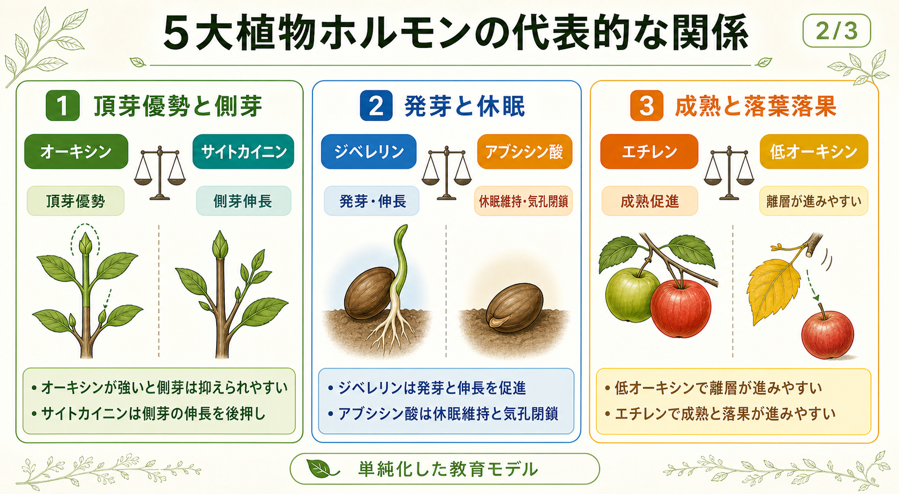
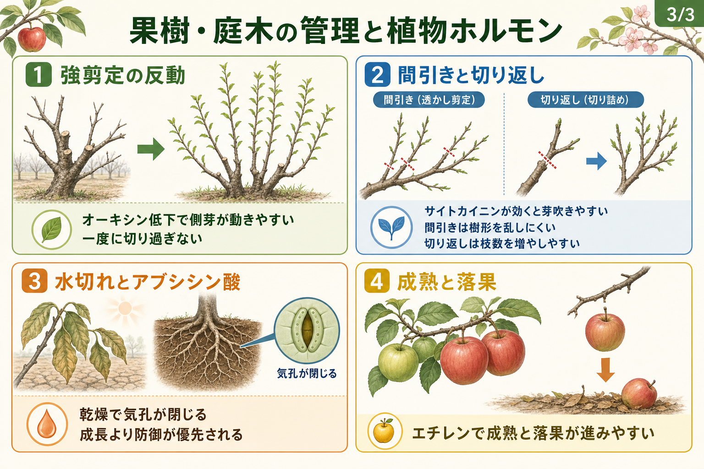
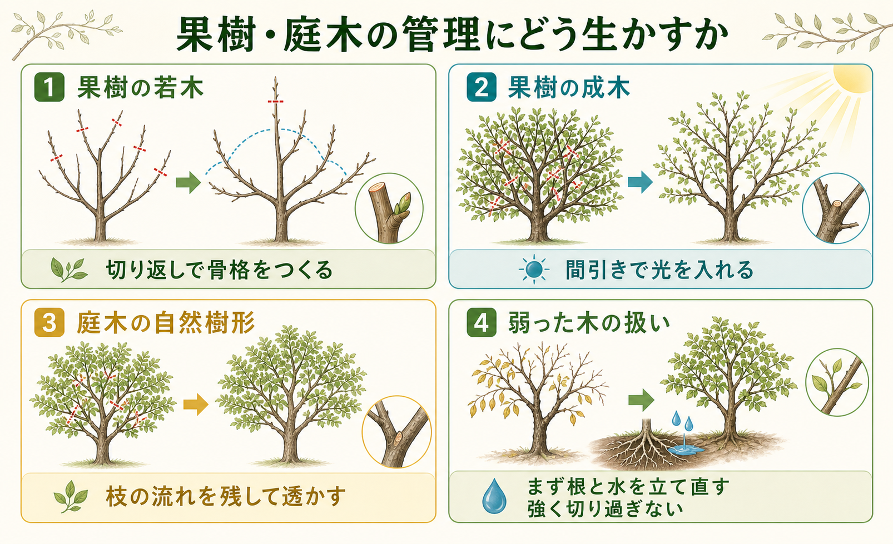

オーキシン
代表部位: 茎頂、若い葉、未熟種子、発育中果実
軸となる作用: 細胞伸長、頂芽優勢、発根、不定根形成
オーキシン、ジベレリン、サイトカイニン、エチレン、アブシシン酸は、植物の伸長、発芽、休眠、成熟、落葉落果、 乾燥応答を調整する代表的なシグナルである。このページでは、基本的な働きから、剪定、水管理、着果、樹勢管理へのつながりまでを、 図解と本文を組み合わせて整理する。
このページの見方
植物ホルモンは単独で効くのではなく、濃度、器官、発育段階、光、温度、水分、栄養条件との組み合わせで働く。 ここでは理解しやすさを優先して、合成が活発な代表部位と、園芸で観察しやすい作用を中心に示す。
先に押さえたい3点
植物ホルモンは多くの組織で合成されうるが、教育上は「どこで目立ちやすいか」「何を強く動かすか」で整理すると理解しやすい。 下の図は、その代表例をまとめた全体像である。

代表部位: 茎頂、若い葉、未熟種子、発育中果実
軸となる作用: 細胞伸長、頂芽優勢、発根、不定根形成
代表部位: 若い組織、種子胚、若い果実
軸となる作用: 茎の伸長、発芽、休眠打破、果実肥大
代表部位: 根の維管束周辺、根端、若い器官
軸となる作用: 細胞分裂、側芽伸長、葉の老化抑制
代表部位: 成熟果実、老化葉、傷害組織
軸となる作用: 成熟、落葉落果、老化、ストレス応答
代表部位: 葉、根、種子、乾燥ストレス組織
軸となる作用: 休眠維持、気孔閉鎖、乾燥応答、発芽抑制
5大植物ホルモンは教科書の暗記事項で終わらせるより、枝の伸び方、芽吹き、乾燥、落果と結び付けると実感しやすい。 ここでは、生理学的な基本と、果樹・庭木での見え方を並べて整理する。
オーキシンは茎頂や若い葉、発育中の果実や種子で目立ちやすく、茎では先端から基部へ極性移動しやすい。 これが頂芽優勢の基盤になり、枝先が元気な間は側芽の伸長が抑えられやすい。
園芸では、枝先を切るとオーキシン供給が減って側芽が動きやすくなる。挿し木の発根促進剤が効くのも、 オーキシン作用を利用しているからである。
ジベレリンは若い組織、種子胚、若い果実などで活発に合成され、茎の伸長、発芽、休眠打破、果実肥大を促進する。 種子発芽では、胚由来のジベレリンが貯蔵養分の利用を進める方向にはたらく。
果樹では、樹勢が強い木や強剪定後の木で、長く柔らかい枝が出やすい状況と結び付けて理解しやすい。 伸び過ぎる木では、剪定と施肥を強め過ぎないことが重要になる。
サイトカイニンは根での合成と、根から地上部への輸送が重要なホルモンで、細胞分裂、側芽の伸長、葉の老化抑制に関わる。 オーキシンに対して相対的に優位になると、休んでいた側芽が動きやすい。
果樹や庭木では、根が健全な木ほど芽吹きが安定しやすい。根が元気な状態で強剪定すると、春の吹き返しが強くなりやすい。
エチレンは成熟果実、老化葉、傷害を受けた組織で増えやすく、気体として周囲へ拡散する。 果実成熟、落葉、落果、老化、傷害応答に深く関わるため、果樹栽培では見過ごせない。
過熟果や傷果を放置すると、周囲の果実の成熟や落果が進みやすい。収穫遅れや病虫害の放置が、樹上での変化を加速させることがある。
アブシシン酸は葉、根、種子、乾燥や塩ストレスを受けた組織で増えやすく、休眠維持、気孔閉鎖、乾燥応答、発芽抑制を担う。 水分損失を抑える防御として極めて重要である。
ただし、防御が優先されると光合成や伸長成長は落ちる。夏の庭木、鉢植え、植え付け直後の苗木で生育が鈍るのは、 アブシシン酸を介した反応と結び付けて考えやすい。
植物ホルモンは実際には複雑なネットワークで働くが、初心者はまず代表的な組み合わせを押さえると理解しやすい。 下の図は、教育用に単純化した3つの代表関係である。

頂芽優勢が強いときは、枝先由来オーキシンの影響で側芽は抑えられやすい。一方で、根由来サイトカイニンの影響が見えやすくなると、 側芽の伸長が進みやすい。剪定後に芽吹き方が変わるのは、このバランス変化で説明しやすい。
ジベレリンは発芽と伸長を進める方向、アブシシン酸は休眠維持と乾燥耐性を優先する方向に働く。 種子の発芽、落葉果樹の休眠、乾燥時の成長停止を整理するときに、最も分かりやすい対比である。
果実や葉でオーキシン供給が下がると、離層形成が進みやすくなる。そこにエチレンの作用が加わると、成熟、落葉、落果が進みやすい。 収穫遅れや樹体ストレスが落果と結び付きやすい背景は、ここで理解できる。
実際には、同じホルモンでも濃度や器官によって逆向きの見え方を示すことがある。したがって、 このページの図解は「最初に混乱しないための整理」として使い、実際の管理では樹勢、光、水、温度、根の状態も合わせて見ることが大切である。
5大植物ホルモンの知識は、果樹と庭木の管理で特に役立つ。強剪定の反動、間引きと切り返しの違い、水切れの初期反応、 果実の成熟と落果など、日常の観察を言語化しやすくなる。

休眠期に大きく切ると、枝先由来オーキシンの低下で側芽抑制が緩み、根に蓄えられた資源とサイトカイニンの影響が強く出やすい。 その結果、春に水芽や徒長枝が多発しやすくなる。
樹勢を落ち着かせたいなら、一度に切り過ぎず、数年単位で少しずつ調整する方が穏やかである。
間引き剪定は枝を元から抜くため、局所的な刺激が比較的小さく、樹冠内部に光と風を入れやすい。 切り返し剪定は近くの芽を動かしやすく、枝数を増やしたい更新や若木づくりに向く。
自然樹形を保ちたい庭木や、果樹で内部結実枝を残したい場合は、間引き主体の方が扱いやすいことが多い。
乾燥するとアブシシン酸が増え、気孔が閉じて蒸散を抑える。これは防御として正しいが、光合成と成長は落ちる。 まだ見た目に大きな変化がなくても、果実肥大や新梢伸長はすでに鈍っていることがある。
植え付け直後、真夏、鉢植えでは特に起こりやすいため、朝の潅水やマルチング、根域保護の効果が大きい。
果実が熟してくるとエチレンの影響が増え、落果もしやすくなる。そこへ乾燥、病虫害、着果過多などのストレスが重なると、 樹上での脱落が進みやすい。
過熟果や傷果を早めに取り除き、収穫遅れを避けることは、品質維持だけでなく樹体の負担軽減にもつながる。
| 観察された状態 | 背景で起きやすいこと | 管理の考え方 |
|---|---|---|
| 強く切った後に徒長枝が多い | オーキシン低下で側芽が解放され、根の資源とサイトカイニンが地上部に効きやすい | 一度に切り過ぎない。翌年以降は間引きを主体にする |
| 挿し木が発根しにくい | オーキシン作用不足、乾燥、温度不適 | 穂の鮮度、水分、温度を整え、必要なら発根剤を使う |
| 夏に葉がしおれやすい | アブシシン酸増加、気孔閉鎖、蒸散と吸水の不均衡 | 朝の潅水、マルチ、根域保護で水ストレスを減らす |
| 樹冠内部が暗く実つきが落ちる | 過繁茂で光が不足し、栄養成長が優位になりやすい | 切り返しより間引きで内部へ光を入れる |
| 収穫前に果実が落ちる | エチレン増加、離層形成、樹体ストレス | 過熟を避け、乾燥、病虫害、着果過多を減らす |
ここから先は、知識をそのまま管理判断へつなぐための整理である。果樹では「樹勢と着果の釣り合い」を、 庭木では「自然樹形と樹冠内部の健全さ」を主眼にすると、ホルモンの見方が実務に落ちやすい。

若木では、主枝や亜主枝を育てるために、切り返し剪定で近くの芽を動かす考え方が役立つ。 オーキシンの抑制を一時的に弱めることで、必要な位置の芽を起こしやすくなるからである。
ただし、毎年強く切り続けると徒長枝ばかり増えやすい。骨格ができたら、切り返し中心から間引き中心へ徐々に移すのがよい。
成木では、実をつける枝へ光を入れ、栄養成長が暴れ過ぎないようにすることが大切である。 樹勢が強い木に対して休眠期の強い切り返しを繰り返すと、オーキシン低下とサイトカイニン作用で水芽が増えやすい。
そのため、成木では間引き剪定を主体にして、込み合う枝、立ち過ぎた枝、陰をつくる枝を抜き、 内部結実枝を保つ方向が基本になる。
庭木では、果実生産よりも樹形、葉姿、枝ぶり、光の抜け方が重要になることが多い。 そのため、外周を一律に刈り込むより、枝の分岐点で間引いて流れを残す方が、ホルモン刺激が局所に集中しにくく、 不自然な吹き返しを抑えやすい。
生垣のように面をそろえる管理を除けば、庭木の剪定では「外へ出る芽まで切り戻す」「不要枝は元から抜く」という原則が扱いやすい。
芽吹きが悪い、葉が小さい、葉先が焼ける、枝先が枯れ込むといった症状では、強剪定より先に根と水分条件を見直したい。 根が弱るとサイトカイニン供給が落ち、乾燥ストレスでアブシシン酸が増えるため、地上部だけ整えても回復しにくいからである。
移植後、根詰まり後、夏の乾燥後は、樹冠整理を軽くとどめて活着と吸水の回復を優先する方が安全である。
| 場面 | 果樹での使い方 | 庭木での使い方 | ホルモンの見方 |
|---|---|---|---|
| 枝数を増やしたい | 若木の骨格づくりで切り返しを使う | 更新したい枝だけ限定的に切り戻す | オーキシン低下で近くの芽が動きやすい |
| 樹冠内部へ光を入れたい | 結実枝を残しながら間引く | 枝の流れを見て不要枝を元から抜く | 間引きは局所的な刺激が小さく、吹き返しを抑えやすい |
| 木が暴れ過ぎる | 強い冬剪定と窒素過多を避ける | 外周だけの切り詰めを減らす | サイトカイニンとジベレリン側の影響が強く出やすい |
| 木が弱っている | 着果負担を減らし、根と水を立て直す | 軽い整理にとどめて活着と回復を優先する | アブシシン酸増加とサイトカイニン低下を疑う |
ホルモンは目に見えないが、反応は新梢、芽吹き、葉色、果実、落葉の仕方として表れる。 剪定の善し悪しは、切った直後より、その後の出方で判断する方が正確である。
太く立った徒長枝が一斉に出るなら、強剪定が強過ぎた可能性がある。次回は切り返し量を減らし、 間引き主体に寄せると落ち着きやすい。
根傷み、過湿、乾燥、着果負担、日照不足などを疑う。単に切り足すのではなく、根と水分条件を先に整える方が理にかなう。
栄養成長が強過ぎる可能性がある。果樹では、樹冠内部へ光を入れること、窒素過多を避けること、強過ぎる剪定を避けることが重要である。
エチレンが増えやすい条件が重なっていないかを確認する。乾燥、病虫害、根傷み、過熟、急な環境変化が引き金になりやすい。
harunami Plant Base では、植物学の基礎と、庭木・果樹の管理へどう落とし込むかをテーマごとにまとめていく。
植物ホルモンの説明では、分かりやすさのために単純化し過ぎると誤解が生じやすい。最低限、次の点は意識しておきたい。
オーキシン、サイトカイニン、アブシシン酸などは、複数の組織で合成される。図や表にある部位は、 合成が特に活発な代表例である。
たとえばオーキシンは発根を促す一方で、頂芽優勢も強める。どこで、どの濃度で、何と組み合わさって働くかを切り分ける必要がある。
剪定の反応は、根の量、貯蔵養分、施肥量、日照、品種、台木、前年の着果量にも左右される。 ホルモンはその背景を説明する軸の1つである。
挿絵と図解は画像生成を使って作成し、本文と参考文献に合わせて採用版を選んでいる。 文字量を抑え、本文側で補足する構成にしているのは、視認性と科学的整合の両立のためである。
基本作用は NCBI Bookshelf と PMC のレビュー、果樹や庭木管理の説明は大学 Extension 資料を中心に整理した。